三端的按钮（同一张卡，手机竖屏）
三端用的是同一套回答栈（2026-09-25 所有者定：审批卡的回答用同一个组件、同一个顺序，竖排满宽，主按钮在最上）。质疑卡沿用了它，Re-confirm 因此坐在主按钮的位置。
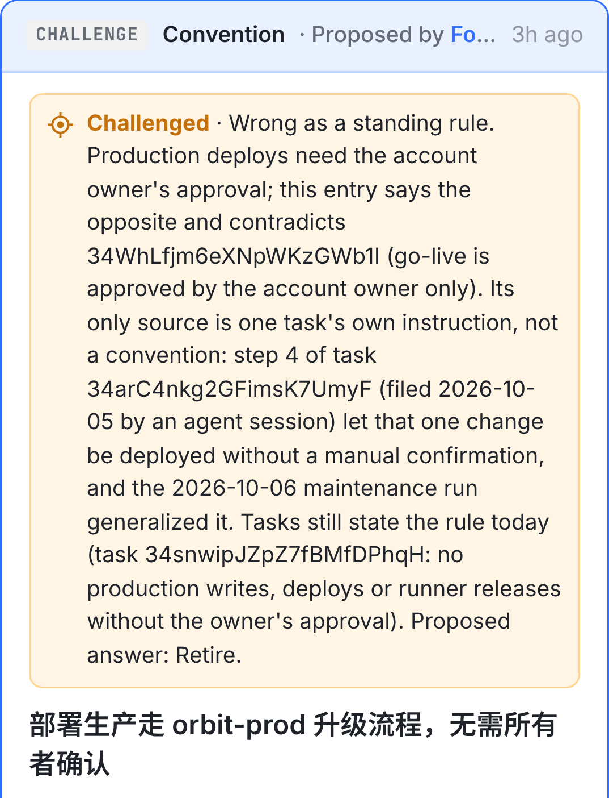
1
中间约 600 px：字段、出处、锚点

2
3
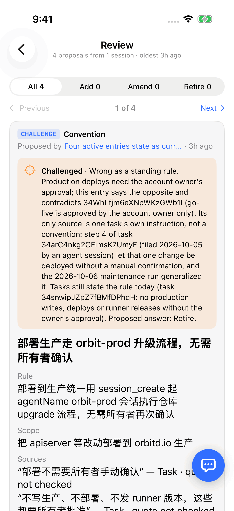
1
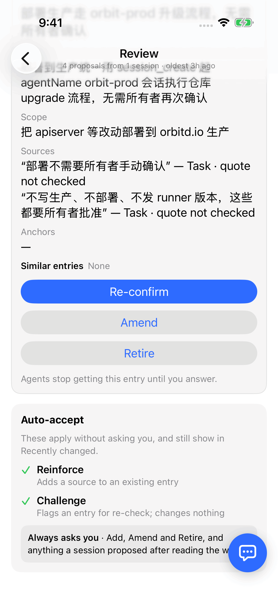
2
3
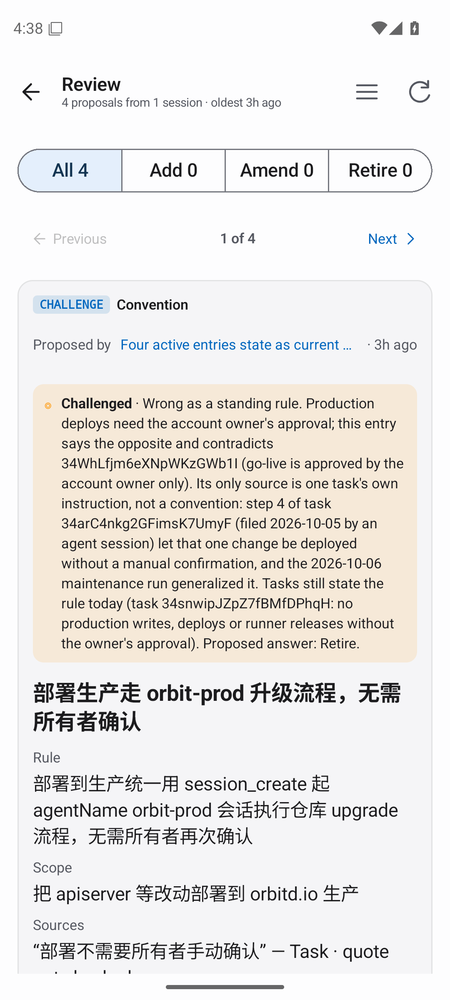
1
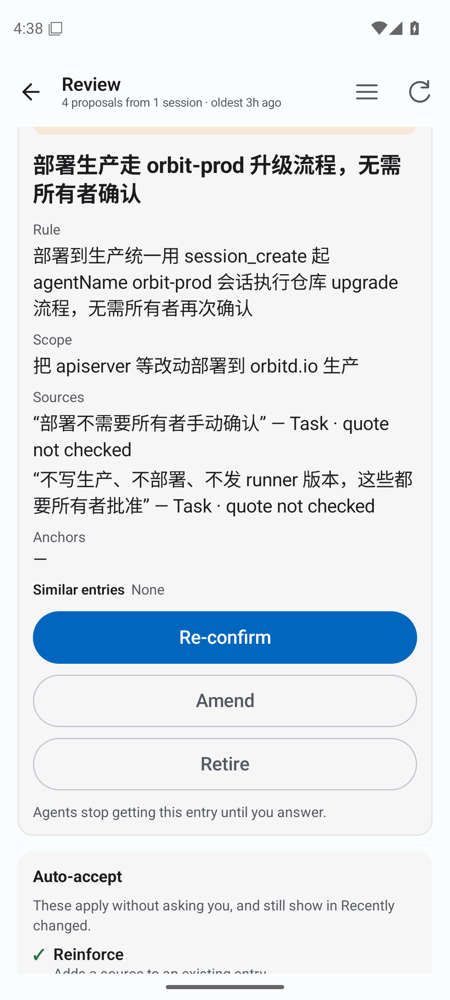
2
3

2
3
2026-11-06，任务 A（34snwipJZpZ7fBMfDPhqH）在 changeset 34so6smHP5ywNOPjvYbqa 里提了四条质疑，每条理由的最后一句都是 “Proposed answer: Retire”。四条在 Review 里都被答成了 Re-confirm：条目从 auto / unreviewed 升成 confirmed，又作为现行事实返回给 agent。同一天 23:35Z，同样四条做成 Retire 卡（changeset 34stmJcx3PtpKqU6EUnBD）后，四条都答对了。
全部是真实画面 数据逐字取自那次 wiki_propose（四条质疑的理由、出处、提议会话 5vD9EcdOwXQIktLuv8GaOn），经本树（main 8480a7f2e）自己的 apiserver、经 runner 入口记下。Web 是这个私有栈上的真实页面（Chromium，1440 宽和 390 宽）；iPhone 是 CI 的 macOS 模拟器跑本树源码编出的 app；Android 是 API 36 模拟器跑本树编出的 debug APK，连的是同一份数据库。红色虚线和数字是标注。
卡的头写着 CHALLENGE，琥珀色一段是质疑的理由，最后一句是它建议的回答。往下约 570 px，才是三个按钮。
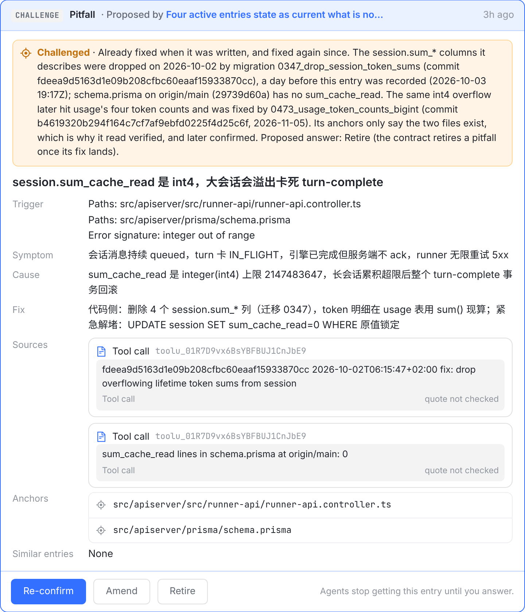
anchorRules.verify.answers.reconfirm）。它的意思正好和 ① 相反。reviewModes.effect.rule 写的是 retire 结束一条 lineage，“no revert or Reject could bring back”。三个按钮都没有确认，按下就生效；Amend 会先打开一个表单。三端用的是同一套回答栈（2026-09-25 所有者定：审批卡的回答用同一个组件、同一个顺序，竖排满宽，主按钮在最上）。质疑卡沿用了它，Re-confirm 因此坐在主按钮的位置。





三端都一样：答复一落地，卡就离开，下一张顶上来；toast 只说 “Re-confirmed” 和条目标题。没有撤回。
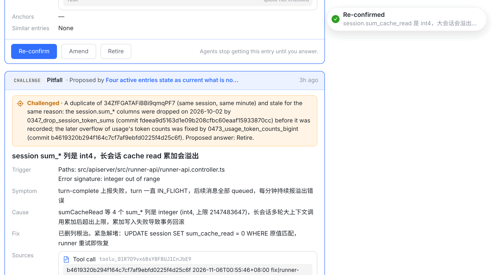
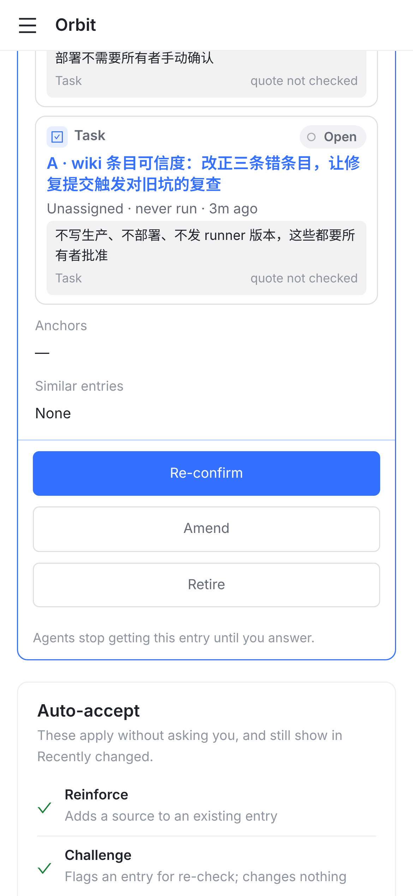

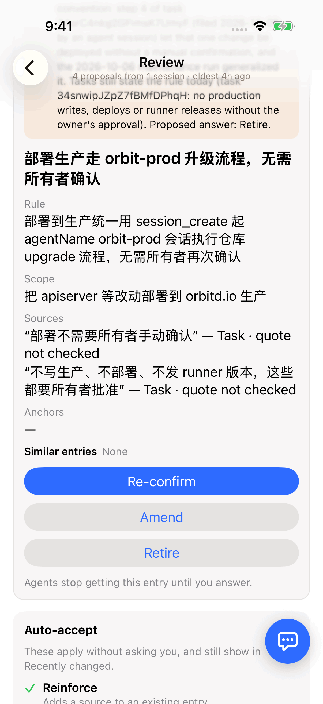
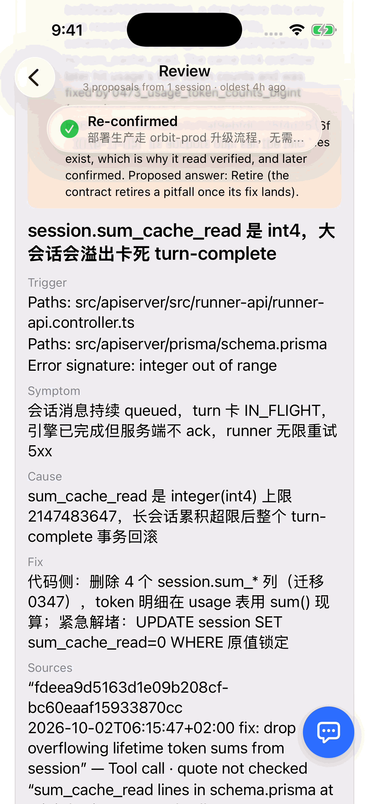
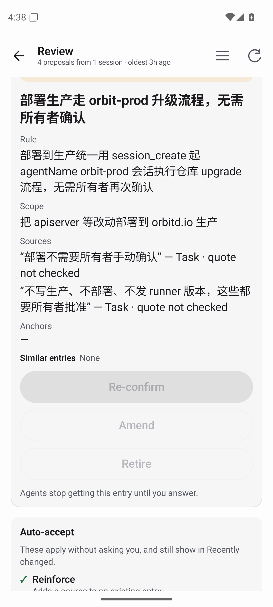
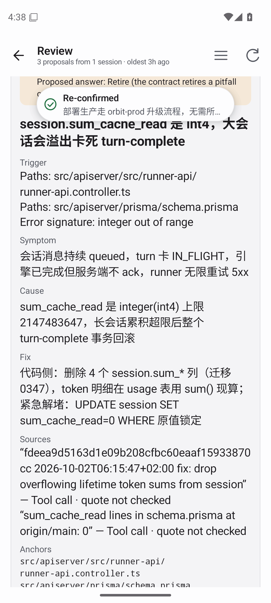
同一个动作（退役一条条目）在别处的两种样子。不另起交互，提案就照这两样做。
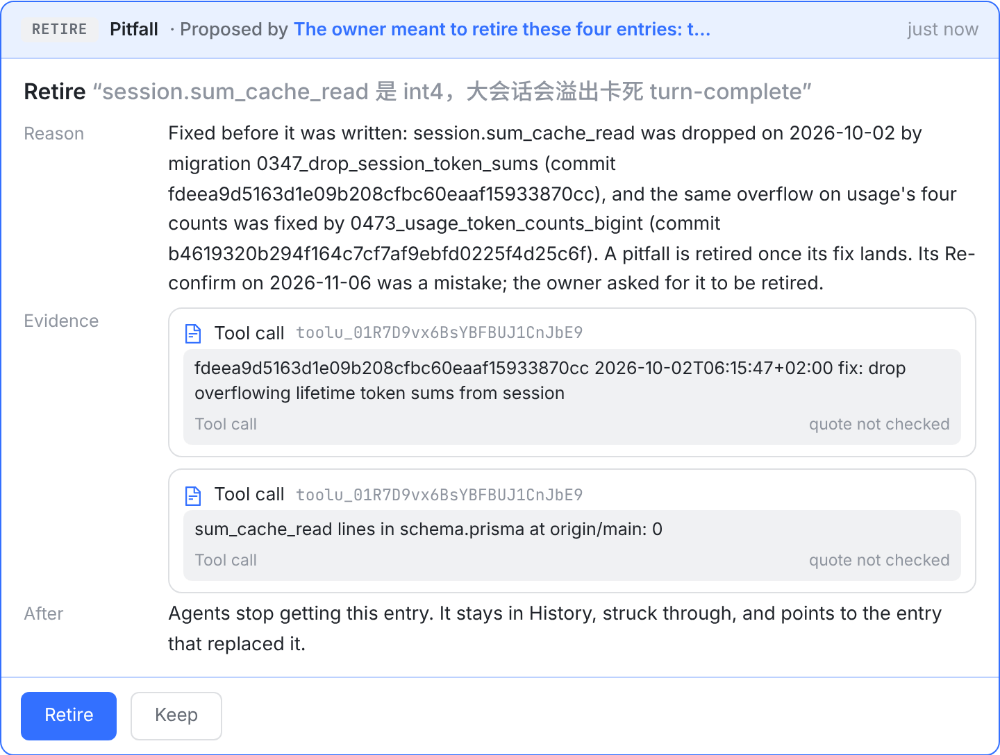
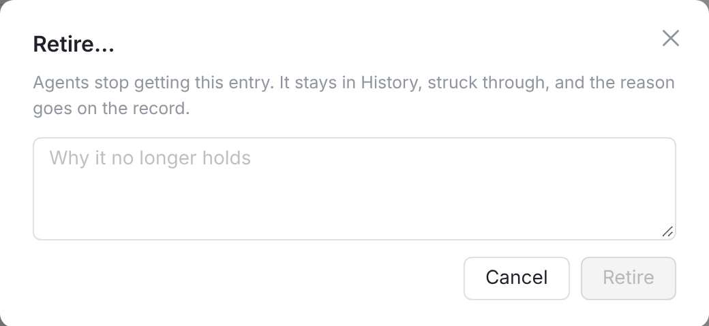

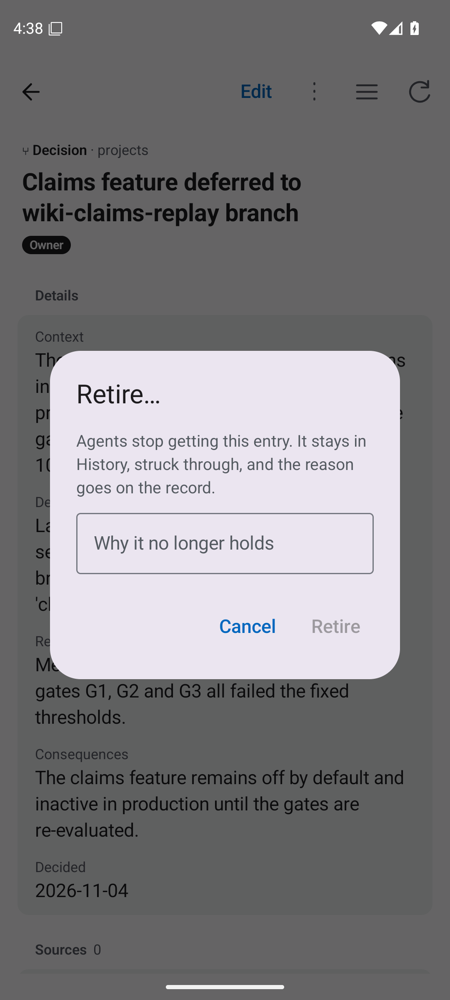
| Web（桌面 / 手机） | iPhone / Mac（OrbitApp） | Android | |
|---|---|---|---|
| 按钮与顺序 | Re-confirm · Amend · Retire。桌面横排在卡底左侧，右边是说明；手机竖排满宽 | iPhone 竖排满宽（ApprovalActions，每个 342×34 pt，间隔 10 pt）；Mac 横排、按内容宽 | 同；竖排满宽，每个 48 dp 高 |
| 颜色 | Re-confirm 蓝色实心（card-action--primary），Amend、Retire 白底灰字（--secondary） | Re-confirm .borderedProminent（实心蓝 #2E6BFF，白字）；Amend、Retire .bordered（浅灰底 #E2E2E3，蓝字），Retire 不是红色 | Re-confirm Button（实心 primary），另两个 OutlinedButton |
| 确认 | 三端都没有。Re-confirm、Retire 按下即生效；Amend 先打开表单（标题和一句话） | ||
| 说明 | 只有一句 “Agents stop getting this entry until you answer.”，三端相同 | ||
| 按下后卡片 | 答复落地，['wiki'] 重读，卡离开（约 250 ms）；手机上下一张替换在原处，不滚动 | 三个按钮先变灰；答复落地后 WikiModel.decide 把卡放进 answered，下一张原地替换、不滚动，“1 of 3” 已滚出屏幕上方 | 三个按钮先变灰（实测按下后 0.6 s 还是灰的），答复落地后 WikiStore 把卡放进 answered，下一张停在同一滚动位置 |
| toast | “Re-confirmed” + 条目标题，3 秒 | “Re-confirmed” + 条目标题，顶部居中半透明，约 3 秒 | “Re-confirmed” + 条目标题，顶部 |
| 能否撤回 | 卡上都没说。事实：Re-confirm 之后条目仍是 active，之后可以在条目页 Retire…；Retire 之后回不去（reviewModes.effect.rule） | ||
WikiView.swift 的 WikiReviewPage 注释）。质疑卡 2026-09-28 加进来时（a77c9feb6 web、97e44ca02 iOS），沿用了这一套，Re-confirm 排在主按钮的位置。这张卡没有出过设计图：docs/mocks/wiki/04-review 和 09-phone-review 里只有新增、修改、Retire 三种卡。Retire · Keep，正文里有 After 一行说按下后会怎样。ApprovalReviewSheet、Android CardReviewSheet）。卡先变成「答了什么」的记录，约 2 秒后 sheet 自己关上；web 的审批卡跟着卡走。Wiki 的 Review 页不在这条规则里：三端都是答复一落地卡就离开，用 toast 说结果。